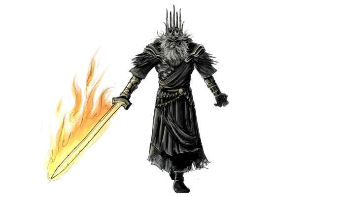
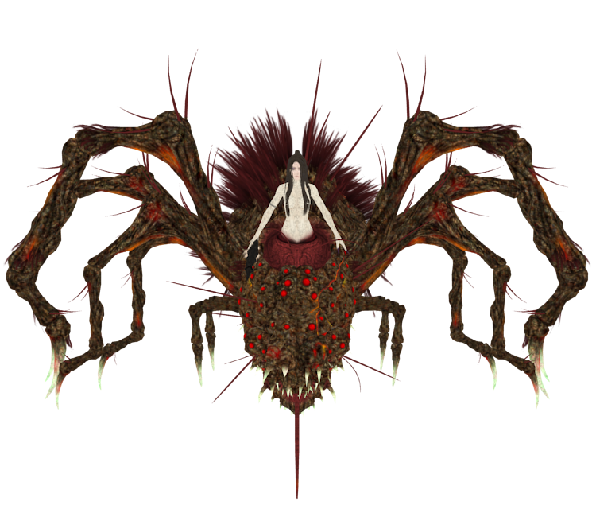
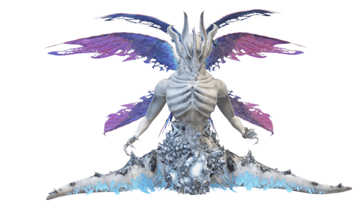
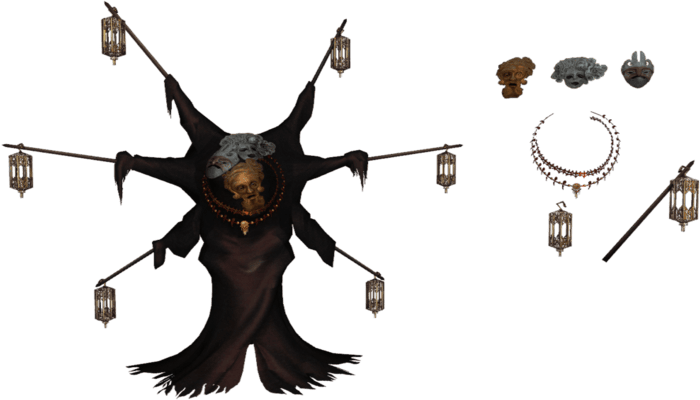

A Filosofia da Transitoriedade em Dark Souls
Quando a Resistência ao Fim Gera o Sofrimento
Dark Souls constrói sua narrativa sobre uma verdade implacável: tentar prolongar o que deveria findar é a raiz de toda decadência. O jogo expõe, através de seus personagens e mundo, como a negação do ciclo natural — crescimento, amadurecimento, declínio e morte — corrompe não apenas indivíduos, mas a própria estrutura da realidade. A insistência em congelar o tempo ou estender uma era condenada transforma-se em maldição, e os que se agarram ao poder tornam-se caricaturas grotescas de seu antigo esplendor.
Gwyn, o Senhor da Luz
O outrora magnânimo soberano, temendo a ascensão humana, marcou sua raça com o Darksign e sacrificou-se para alimentar a Chama. Seu ato desesperado não apenas prolongou uma era caduca, mas amaldiçoou a humanidade com uma "imortalidade vazia": os Hollows, condenados a definhar em corpos que não morrem, mas perdem, a cada morte, fragmentos de sua humanidade. Ironia cruel: o próprio Gwyn, encontrado como um Hollow senil guardando uma chama moribunda, tornou-se o símbolo do fracasso de sua própria ambição.

A Bruxa de Izalith e o Preço da Ganância
Ao tentar replicar a Chama Primordial, sua piromancia descontrolada deu origem ao Chaos Flame — uma energia que deformou Izalith e seus habitantes em demônios. A Bruxa, reduzida a uma larva impotente, e suas filhas (como Queelag e a Fair Lady), condenadas a sofrer eternamente por seus corpos mutilados,

Seath, o Sem-Escamas: A Inveja que Consome
Traidor de sua espécie por invejar a imortalidade dos dragões, Seath alcançou sua obsessão através do Cristal Imortal — apenas para descobrir que a eternidade sem significado é uma prisão. Sua sanidade dissipou-se junto com sua visão, deixando apenas um monstro que torturava inocentes em experimentos insanos.

Pinwheel: O Amor que se Torna Tormento
Em sua tentativa de reviver família morta, o necromante fundiu-se aos cadáveres de esposa e filho em um único corpo disforme. Seu "sucesso" foi a perversão definitiva do afeto: união física sem alma, vida sem vitalidade.

O Legado de Lordran: Um Mundo em Agonia
A distorção temporal de Lordran — onde heróis de eras passadas coexistem em um presente estilhaçado — é a metáfora máxima dessa resistência ao natural. O jogo não poupa o jogador: até os NPCs que buscam fugir de seu destino (como Solaire, devorado por sua própria obsessão) sucumbem.
Dark Souls ensina que a beleza da existência está em sua fugacidade. Tentar preservá-la à força é condenar-se a uma existência pálida, onde mesmo a vitória tem gosto de cinzas. A aceitação do fim, seja pessoal ou cósmico, não é derrota, mas a única forma de evitar tornar-se Hollow — não de corpo, mas de espírito.
Moralidade Ambígua e Personagens Complexos
Não há vilões absolutos. Gwyn, por exemplo, é movido por medo, não por maldade. Suas ações são questionáveis, mas compreensíveis. Dark Souls rejeita dicotomias simplistas e abraça a complexidade moral. A história é escrita por sobreviventes, distorcida por interesses, e muitas vezes oculta por conveniência. O jogador é desafiado a julgar por si mesmo — e a aceitar que talvez não haja julgamento definitivo.